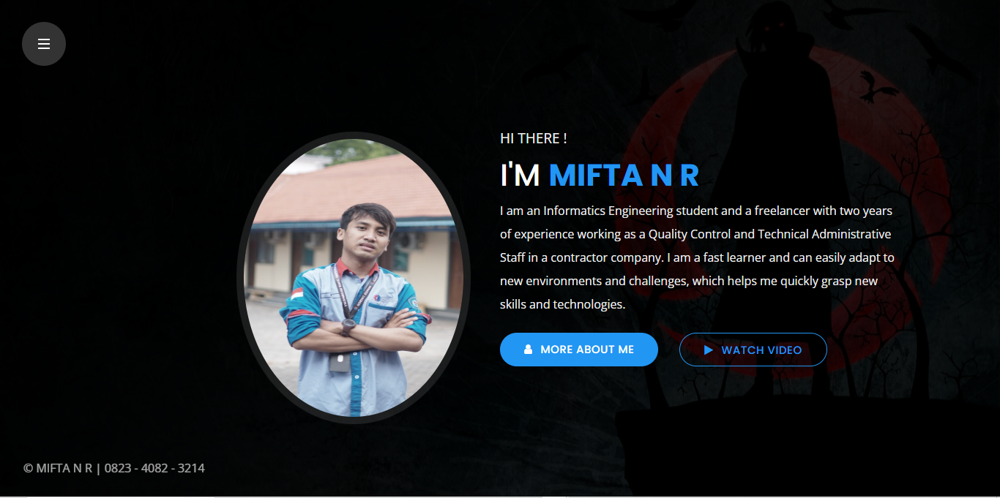
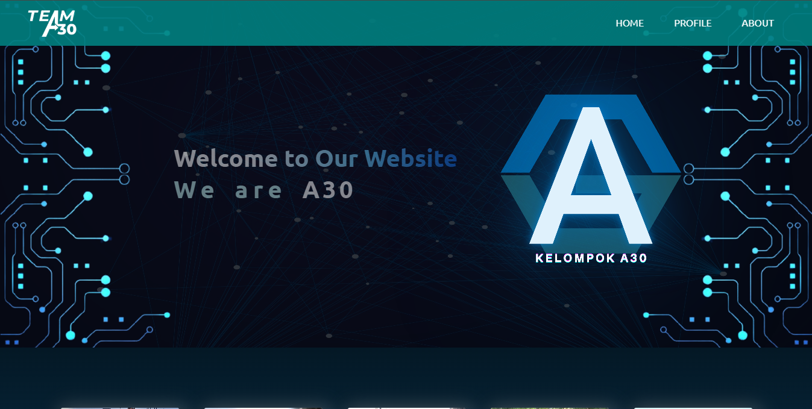

Im the fast learner about technology if i focus on it
My Profile
This picture take when i was a member of Human Resources Development of HIMA - TIF PGRI Ronggolawe University. I am an Informatics Engineering student and a freelancer with two years of experience working as a Quality Control and Technical Administrative Staff in a contractor company. I am a fast learner and can easily adapt to new environments and challenges, which helps me quickly grasp new skills and technologies.
My Project
Here are the projects that I have worked on in groups and individually
Web Portofolio

The web portfolio project above is an assignment from the Professional Ethics course. In the project I worked alone, I used a template and I adjusted it to my profile.
Landing Page Kelompok

The web portfolio project above is an assignment from the Professional Ethics course. In the project I worked alone, I used a template and I adjusted it to my profile.
Landing Page Product
The web portfolio project above is an assignment from the Professional Ethics course. In the project I worked alone, I used a template and I adjusted it to my profile.